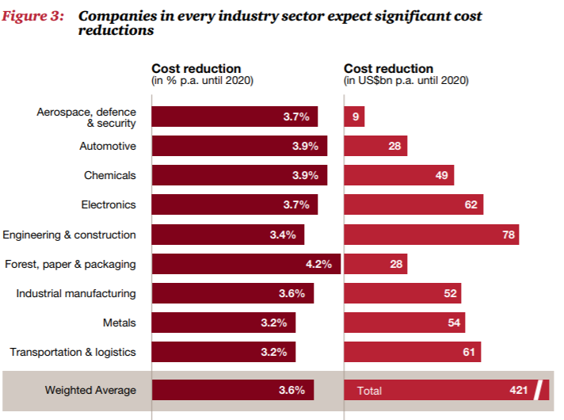

Smart Technology - Industry 4.0: Building the digital enterprise
Een samenvatting in een verslag van PriceWaterhouseCoopers (PWC) m.b.t. tot Industrie 4.0 en de digitale wereld. Het bedrijf PWC is 3 jaar op rij verkozen tot de meest prestigieuze adviesbureau ter wereld. Het bedrijf bestaat uit meer dan een kwart miljard werknemers.
Uit dit verslag heb ik meer inzicht verkregen in de grootte van Industrie 4.0 en welke type bedrijven voornamelijk bezig zijn met dit onderwerp
Onderstaand is een afbeelding te zien waarin aangegeven staat in welke landen Industry 4.0 een rol speelt. Zoals te zien speelt Industry 4.0 voornamelijk een grote rol in westerse landen.

In deze landen zijn er bij verscheidene bedrijven gekeken naar de impact van digitalisering als onderdeel van Industry 4.0 ten aanzien van kosten. Bron (PWC, 2016)

Er is ook gekeken naar de verschillende sectoren en de bijbehorende investeringen in Industrie 4.0